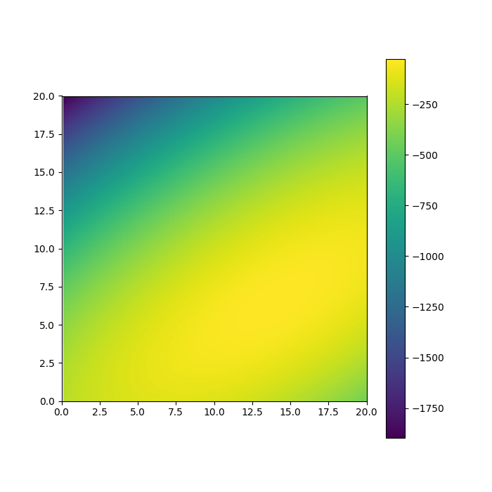
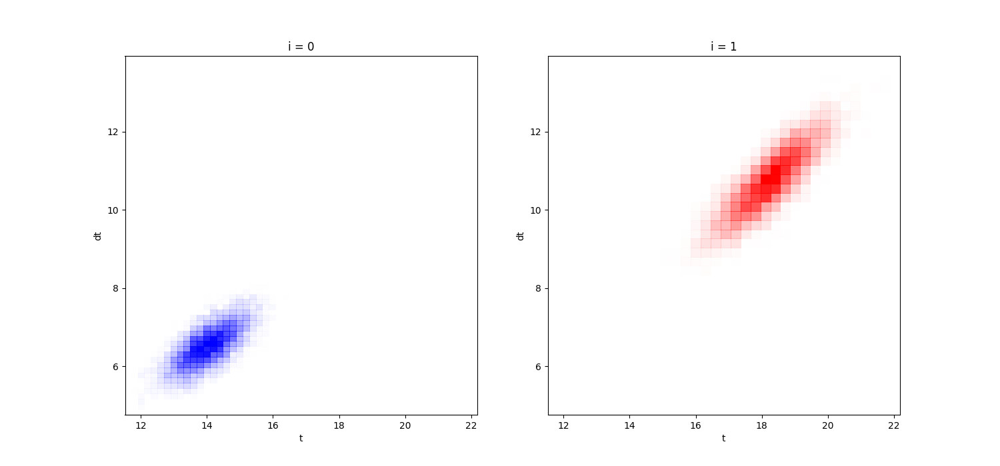

import handout
import matplotlib.pyplot as plt
import numpy as np
import tensorflow as tf
import tensorflow_probability as tfp
import pprint
from tensorflow_probability import distributions as tfd
doc = handout.Handout('./spacetime')
# Parameters on the (past) starting point time
t_conc = 2.
t_rate = 2.
# "Flow rates" from sources to destinations
omega = tf.constant(
[[.3, .7],
[.4, .6]], dtype=np.float32)
# Mean transit times from sources to destinations
theta = tf.constant(
[[4., 7.],
[10., 12.]], dtype=np.float32)
# Stddevs of transit times from sources to destinations
sigma = tf.constant(
[[.5, .5],
[.8, .8]], dtype=np.float32)
# Mean and stddev of "infection delay"
theta_d = 8.
sigma_d = .5
jd = tfd.JointDistributionNamed(dict(
i = tfd.Categorical(probs=[.5] * 2),
t = tfd.Gamma(concentration=t_conc, rate=t_rate),
j = lambda i: tfd.Categorical(probs=omega[i, :]),
dt = lambda i, j: tfd.Normal(loc=theta[i, j], scale=sigma[i, j]),
d = tfd.Normal(theta_d, sigma_d),
))
ds, xs = jd.sample_distributions(seed=42)
doc.add_text(pprint.pformat(xs, indent=2))
doc.show()
{ 'd': <tf.Tensor: shape=(), dtype=float32, numpy=7.780795>,
'dt': <tf.Tensor: shape=(), dtype=float32, numpy=12.977209>,
'i': <tf.Tensor: shape=(), dtype=int32, numpy=1>,
'j': <tf.Tensor: shape=(), dtype=int32, numpy=1>,
't': <tf.Tensor: shape=(), dtype=float32, numpy=0.25134638>}
# Want: posterior over time and source of outbreak:
#
# p(i, t | j=j_) = \int d(dt) d(d) p(i, t, d, dt | j)
# = \int d(dt) d(d) p(i, t, d, dt, j) / p(j)
#
# Can estimate by sampling d and dt, too, and averaging
#
# p(i, t | j=j_) ~= 1/M \sum_m p(i, t, d=d_m, dt=dt_m | j=j_)
lp_t_dt_i0 = lambda t, dt: jd.log_prob(i=0, j=xs['j'], t=t, dt=dt, d=(t - dt))
lp_t_dt_i1 = lambda t, dt: jd.log_prob(i=1, j=xs['j'], t=t, dt=dt, d=(t - dt))
fig, ax = plt.subplots(figsize=(7, 7))
ts, dts = np.meshgrid(np.linspace(0., 20., 200),
np.linspace(0., 20., 200))
im = ax.imshow(
lp_t_dt_i0(ts, dts),
extent=[ts.min(), ts.max(), dts.min(), dts.max()],
origin='bottom')
plt.colorbar(im)
doc.add_figure(fig)
doc.show()
def run_inference(tlp):
nuts = tfp.mcmc.NoUTurnSampler(
target_log_prob_fn=tlp,
step_size=.1)
ttk = tfp.mcmc.TransformedTransitionKernel(
inner_kernel=nuts,
bijector=[
tfp.bijectors.Softplus(),
tfp.bijectors.Identity()])
ssa = tfp.mcmc.DualAveragingStepSizeAdaptation(
inner_kernel=ttk,
num_adaptation_steps=100)
@tf.function(autograph=False, experimental_compile=True)
def run():
return tfp.mcmc.sample_chain(
num_results=1000,
current_state=[tf.ones([8], dtype=np.float32), tf.zeros([8], dtype=np.float32)],
kernel=ttk,
num_burnin_steps=300,
trace_fn=None)
return run()
import matplotlib.colors
posterior_ts = []
posterior_dts = []
for i, tlp in [(0, lp_t_dt_i0), (1, lp_t_dt_i1)]:
doc.add_text('i =', i)
samples = run_inference(tlp)
posterior_ts.append(samples[0].numpy().reshape([-1]))
posterior_dts.append(samples[1].numpy().reshape([-1]))
# fig, ax = plt.subplots(nrows=2, ncols=1, figsize=(7, 7))
# ax[0].plot(posterior_ts, alpha=.5)
# ax[0].plot(posterior_dts, alpha=.5)
# ax[1].hist(posterior_ts, alpha=.5, bins=25)
# ax[1].hist(posterior_dts, alpha=.5, bins=25)
# doc.add_figure(fig)
cms = [
matplotlib.colors.LinearSegmentedColormap.from_list(
name='blue_alpha',
colors=[(0, 0, 1, 0), (0, 0, 1, 1)]),
matplotlib.colors.LinearSegmentedColormap.from_list(
name='red_alpha',
colors=[(1, 0, 0, 0), (1, 0, 0, 1)]),
]
fig, ax = plt.subplots(ncols=2, figsize=(15, 7))
for i in range(2):
ax[i].hist2d(posterior_ts[i], posterior_dts[i], bins=25, cmap=cms[i], cmin=1)
ax[i].set_xlim(
min(posterior_ts[0].min(), posterior_ts[1].min()),
max(posterior_ts[0].max(), posterior_ts[1].max()))
ax[i].set_ylim(
min(posterior_dts[0].min(), posterior_dts[1].min()),
max(posterior_dts[0].max(), posterior_dts[1].max()))
ax[i].set_title('i = {}'.format(i))
ax[i].set_xlabel('t')
ax[i].set_ylabel('dt')
doc.add_figure(fig)
doc.show()
i = 0
i = 1
